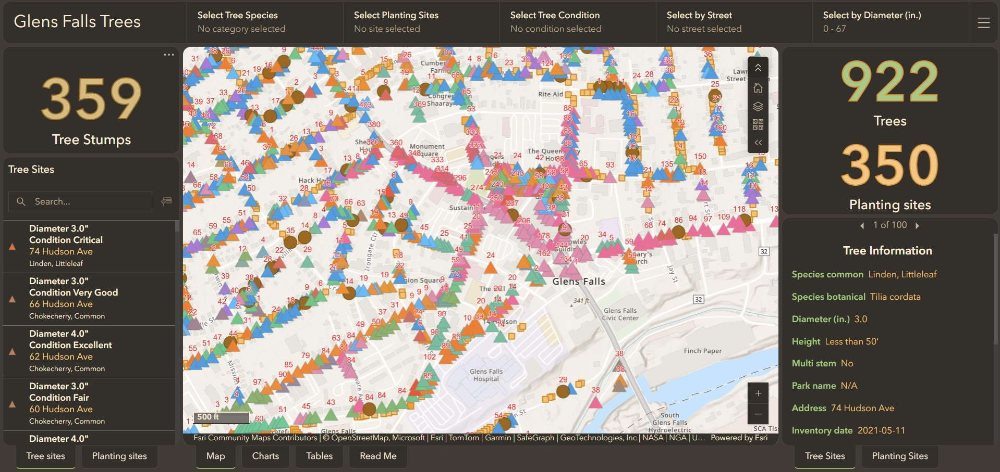
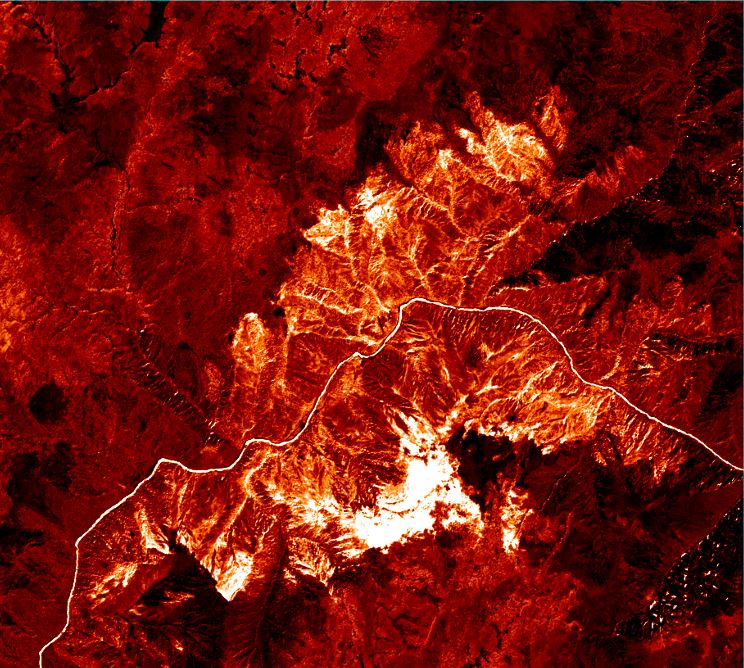

Hi, I'm Harry Thurston, a geospatial professional based in San Francisco, California.
Approaching challenges through a spatial lens adds meaningful context to data and enables the delivery of actionable insights. My experience working with geospatial data has strengthened my ability to identify underlying patterns and translate them into practical solutions for municipal operations.
I previously served as the sole GIS Technician for the City of Glens Falls, NY, where I managed the city's spatial infrastructure in support of the City Engineer, field crews, and planning staff. In this role, I developed strong proficiency in Esri products, including ArcGIS Online, ArcGIS Pro, and Field Maps. I designed and deployed web maps, applications, layouts, and dashboards that improved access to accurate, well-organized data for both internal teams and the public. Toward the end of my tenure, I implemented automated workflows that enabled the Department of Public Works to efficiently update tree maintenance records directly from the field.
I hold a degree in Geography with a minor in Geospatial Technologies from the University of Vermont. During my time there, I worked at the Spatial Analysis Lab, where I contributed to land cover and tree canopy mapping projects using LiDAR and high-resolution imagery in ArcGIS Pro.